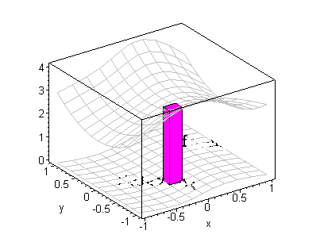

Calculus
This is a learning
resource page for Calculus, for 2nd year undergraduates.
It is independent of any particular module or programme.
The material here may thus be of use to any 2nd year Mathematics
(or other) student
studying Calculus (but do check your syllabus).
Study Notes
-
Calculus, Chapters 1-5 (pdf format)
. (These notes started life as lecture notes for a specific Part 2
Calculus module, but we are just using them as a learning aid.)
Versions: As readers find typos (!), I upload
new versions. So you can quickly tell when a
new version appears, I am using version numbers:
The first release was v0.1. The current release is v0.3.3 (7/10/06).
-
Another wonderful set of Calculus lecture notes
(including exercises), prepared by my former colleague
Dr Castro-Alvaredo can be downloaded from
here.
Exercises
Excercises are integrated in the notes.
If you would like additional exercises there are some very good ones here:
Lagrange Multipliers
(Concentrate on exercises 1-16.
There are no model solutions for these exercises. To check you have it right,
use DERIVE to sketch the curve.
Alternatively, use the wonderful online curve sketcher at
WWW Interactive Multipurpose Server!)

The next picture is a schematic for double integration.
Here are some more exercises, in the form of old coursework sheets:
- Old Coursework I .pdf
- Old Coursework II .pdf
Some useful textbooks
-
G Stephenson, Mathematical Methods for Science Students, Longman Publishers.
(Contains numerous good exercises.)
- M R Spiegel, Advanced Calculus (Schaum), McGraw Hill Publishers.
Paul Martin (base=amsta)
Last Modified: Oct 2007